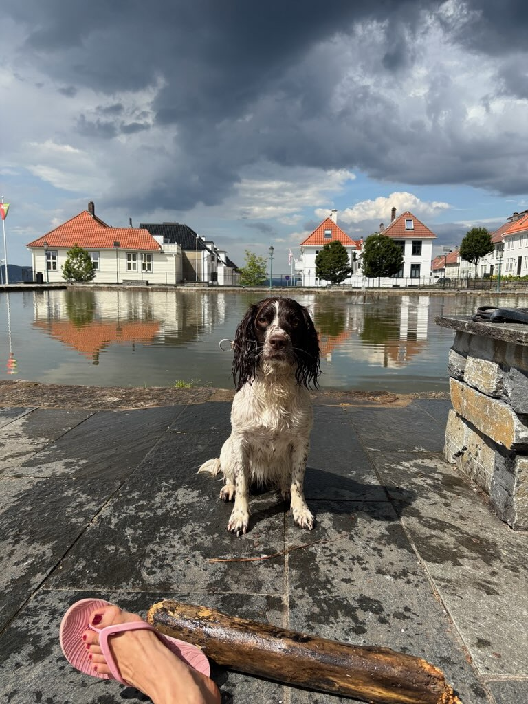

Walther
Arbeidende hanhund med godt gemytt og fine bruksegenskaper.
Kull 1
Vårt første kull består av valper med fokus på godt gemytt, funksjonelle egenskaper og en trygg start i livet.
Om kullet
Dette kullet er etter Stella og Walther, to hunder med godt temperament, nærhet til familien og egenskaper vi ønsker å føre videre. Valpene vokser opp i hjemlige omgivelser med tidlig sosialisering og tett oppfølging.
Målet vårt er å gi hver valp en trygg og god start, slik at de får de beste forutsetningene for å fungere både som familiehund og til aktiv bruk.
Foreldredyr
Arbeidende hanhund med godt gemytt og fine bruksegenskaper.

Trygg og lojal tispe med stabilt temperament og gode familieegenskaper.
Valpene
Klikk deg inn på hver valp for å se bilder, informasjon og detaljer.

Trygg og nysgjerrig valp med fin kontakt og rolig utvikling.

Oppmerksom og sosial valp med godt driv og mye nærhet.

Rolig og kontaktsøkende valp som utvikler seg fint i hjemmemiljø.

Aktiv og våken valp med god nysgjerrighet og trygghet.

Harmonisk valp med godt gemytt og fin kontakt med mennesker.
Mer informasjon
Ta gjerne kontakt dersom du ønsker mer informasjon om kullet, foreldredyrene eller hvordan vi følger opp valpene.
Kontakt
Reidun og Lars Sandvik
E-post: kasantix@gmail.com
Telefon: +47 416 46 966